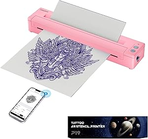
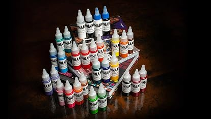
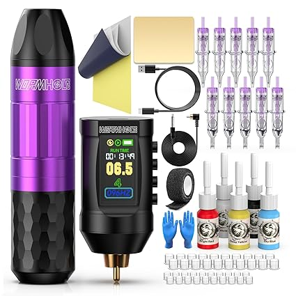
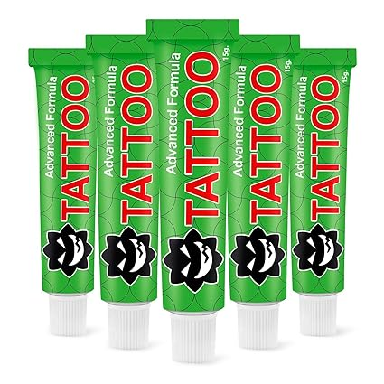
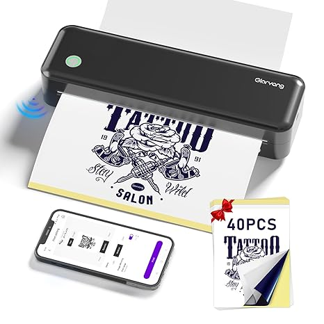
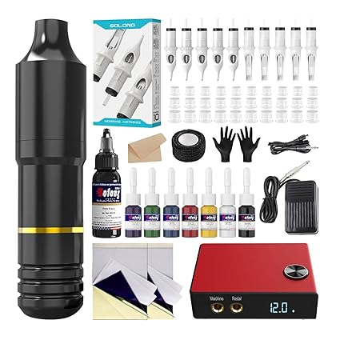
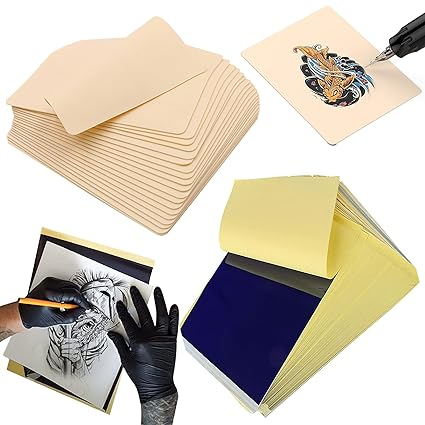
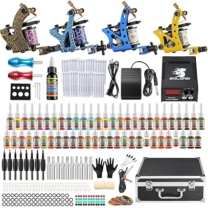

Tenemos la mas amplia variedad en insumos para tatuajes y body piercing. La mejor calidad en materiales,
todo en un solo lugar.
En nuestro estudio no solo ofrecemos tatuajes y perforaciones de alta calidad, sino que también contamos
con
una
amplia variedad de insumos profesionales para artistas del tatuaje y especialistas en perforaciones.
Disponemos
de tintas certificadas, agujas estériles, dermógrafos, cartuchos, máquinas de última generación, así
como
aftercare y productos de higiene esenciales para un trabajo seguro y preciso. Además, ofrecemos una
selección de
joyería para perforaciones en acero quirúrgico, titanio y materiales biocompatibles, garantizando
calidad y
seguridad para nuestros clientes. Ya seas un profesional del sector o alguien que busca los mejores
productos
para el cuidado de su piel, en nuestro estudio encontrarás lo que necesitas con la garantía de un equipo
experto
y comprometido con la excelencia.

Impresora inalámbrica de plantillas de tatuaje, máquina de impresora de transferencia de tatuajes
temporal
portátil con Bluetooth, kit de impresora para tatuadores y principiantes

Juego de tinta de tatuaje 1/2 oz (0.5 fl oz) suministro de tatuaje 14 colores kit de pigmento tinta
USA
TI203-15-14

Wormhole Tattoo Kit de pistola Kit de máquina de tatuaje inalámbrico Kit completo de tatuaje Kit de
bolígrafo de
tatuaje recargable inalámbrico fuente de alimentación de tatuaje portátil 1,800mAh

Crema externa para tatuajes - Crema para tatuajes extra fuerza, tatuaje, inyección y bordado -
Ingredientes
naturalesCrema TattooTK (5 piezas)

Impresora inalámbrica de plantillas de transferencia de tatuajes, máquina de tatuaje térmica
portátil
para
principiantes de tatuajes con 40 piezas de papel de plantilla

Solong - Pistola de tatuaje rotativa completa para principiantes y artistas, kit de pistola de
tatuaje
profesional con agujas de tatuaje y tinta de tatuaje (juego de 60 piezas)

Rayyl 20 piezas de piel de práctica de tatuaje con kit de papel de transferencia, incluye 5 piezas
de
piel
falsa
de práctica de tatuaje y 15 piezas de papel de transferencia para principiantes

Solong Tattoo® set de tatuaje para principiantes 4 pistolas pro máquina 54 proveedores poderosos de
tintas
pedal
para pie extremos sin agarre TK456